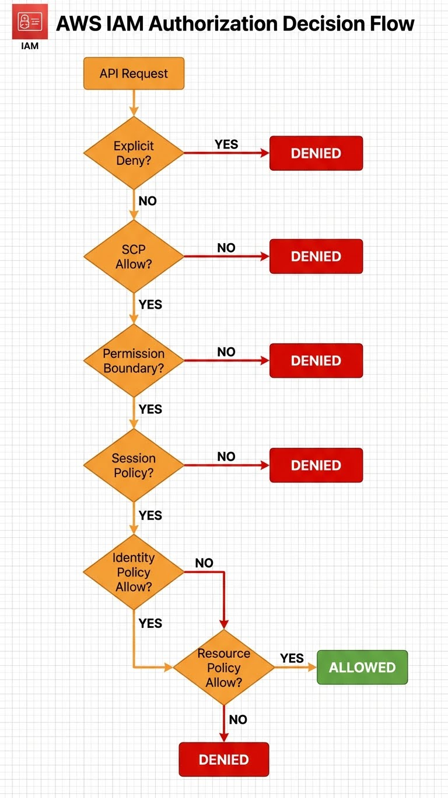

Module 1 : Console AWS, Comptes & IAM
Objectifs du Module
À la fin de ce module, vous serez capable de :
- Naviguer efficacement dans la Console AWS
- Comprendre la hiérarchie AWS Organizations
- Configurer IAM (Users, Groups, Roles, Policies)
- Créer et gérer des Service Roles pour les applications
- Utiliser AWS CLI pour l'automatisation
Prérequis
- Compte AWS avec accès administrateur
- Connaissances Linux de base
- Familiarité avec les concepts d'authentification
1. Découverte de la Console AWS
1.1 Accès à la Console
La Console AWS est l'interface web principale pour gérer vos ressources.
URL : https://console.aws.amazon.com
Types de connexion :
├── Root Account (email + password) → À éviter pour les tâches quotidiennes
├── IAM User (username + password) → Recommandé pour les admins
├── IAM Identity Center (SSO) → Recommandé pour les entreprises
└── Federated (SAML/OIDC) → Intégration AD/Okta/etc.
1.2 Navigation dans la Console
Éléments clés :
| Élément | Description |
|---|---|
| Region Selector | En haut à droite, sélectionne la région AWS active |
| Services Menu | Accès à tous les services (450+) |
| CloudShell | Terminal intégré avec AWS CLI préinstallé |
| Resource Groups | Organiser les ressources par tags |
| AWS Organizations | Gérer plusieurs comptes AWS |
1.3 AWS CloudShell
CloudShell est un terminal basé navigateur avec AWS CLI préconfiguré :
# CloudShell est déjà authentifié avec vos credentials
aws sts get-caller-identity
# Stockage persistant (1 Go par région)
ls ~/
# Outils préinstallés
aws --version
python3 --version
node --version
git --version
2. Hiérarchie AWS Organizations
2.1 Structure Multi-Comptes

graph TD
subgraph "AWS Organizations"
ROOT[("🏢 Organization Root")]
subgraph "OUs - Organizational Units"
OU_PROD["📁 OU: Production"]
OU_DEV["📁 OU: Development"]
OU_SEC["📁 OU: Security"]
end
subgraph "AWS Accounts"
ACC_PROD1["🔷 Account: prod-app1"]
ACC_PROD2["🔷 Account: prod-app2"]
ACC_DEV["🔷 Account: dev-sandbox"]
ACC_LOG["🔷 Account: security-logs"]
ACC_AUDIT["🔷 Account: security-audit"]
end
ROOT --> OU_PROD
ROOT --> OU_DEV
ROOT --> OU_SEC
OU_PROD --> ACC_PROD1
OU_PROD --> ACC_PROD2
OU_DEV --> ACC_DEV
OU_SEC --> ACC_LOG
OU_SEC --> ACC_AUDIT
end
style ROOT fill:#ff9900,color:#000
style OU_PROD fill:#1a73e8,color:#fff
style OU_DEV fill:#34a853,color:#fff
style OU_SEC fill:#ea4335,color:#fff2.2 Service Control Policies (SCPs)

Les SCPs définissent les permissions maximales pour les comptes d'une OU :
{
"Version": "2012-10-17",
"Statement": [
{
"Sid": "DenyRootUser",
"Effect": "Deny",
"Action": "*",
"Resource": "*",
"Condition": {
"StringLike": {
"aws:PrincipalArn": "arn:aws:iam::*:root"
}
}
},
{
"Sid": "RequireIMDSv2",
"Effect": "Deny",
"Action": "ec2:RunInstances",
"Resource": "arn:aws:ec2:*:*:instance/*",
"Condition": {
"StringNotEquals": {
"ec2:MetadataHttpTokens": "required"
}
}
}
]
}
3. IAM - Identity and Access Management
3.1 Concepts Fondamentaux
graph LR
subgraph "Principals (Qui ?)"
USER["👤 IAM User"]
GROUP["👥 IAM Group"]
ROLE["🎭 IAM Role"]
FED["🔐 Federated User"]
end
subgraph "Policies (Quoi ?)"
MANAGED["📋 AWS Managed"]
CUSTOM["📝 Customer Managed"]
INLINE["📌 Inline Policy"]
end
subgraph "Resources (Où ?)"
EC2["💻 EC2"]
S3["📦 S3"]
RDS["🗄️ RDS"]
LAMBDA["⚡ Lambda"]
end
USER --> MANAGED
GROUP --> CUSTOM
ROLE --> INLINE
MANAGED --> EC2
CUSTOM --> S3
INLINE --> RDS
INLINE --> LAMBDA
style USER fill:#232f3e,color:#fff
style ROLE fill:#ff9900,color:#0003.2 Flux de Décision IAM
flowchart TD
START([Request]) --> EXPLICIT_DENY{Explicit Deny?}
EXPLICIT_DENY -->|Oui| DENIED[❌ DENIED]
EXPLICIT_DENY -->|Non| SCP{SCP Allow?}
SCP -->|Non| DENIED
SCP -->|Oui| PERMISSION{Permission<br/>Boundary?}
PERMISSION -->|Non| DENIED
PERMISSION -->|Oui| SESSION{Session<br/>Policy?}
SESSION -->|Non| DENIED
SESSION -->|Oui| IDENTITY{Identity-based<br/>Allow?}
IDENTITY -->|Oui| ALLOWED[✅ ALLOWED]
IDENTITY -->|Non| RESOURCE{Resource-based<br/>Allow?}
RESOURCE -->|Oui| ALLOWED
RESOURCE -->|Non| DENIED
style ALLOWED fill:#34a853,color:#fff
style DENIED fill:#ea4335,color:#fff3.3 Créer un IAM User
- IAM → Users → Create user
- User name:
admin-john - Provide user access to AWS Management Console ✓
- Attach policies:
AdministratorAccess(ou custom) - Download credentials
# Créer l'utilisateur
aws iam create-user --user-name admin-john
# Créer les credentials console
aws iam create-login-profile \
--user-name admin-john \
--password "TempPassword123!" \
--password-reset-required
# Créer les access keys (CLI)
aws iam create-access-key --user-name admin-john
# Attacher une policy
aws iam attach-user-policy \
--user-name admin-john \
--policy-arn arn:aws:iam::aws:policy/PowerUserAccess
3.4 IAM Groups
Les groupes simplifient la gestion des permissions :
# Créer un groupe
aws iam create-group --group-name Developers
# Attacher une policy au groupe
aws iam attach-group-policy \
--group-name Developers \
--policy-arn arn:aws:iam::aws:policy/PowerUserAccess
# Ajouter un utilisateur au groupe
aws iam add-user-to-group \
--group-name Developers \
--user-name admin-john
# Lister les groupes d'un utilisateur
aws iam list-groups-for-user --user-name admin-john
3.5 IAM Policies
Structure d'une policy :
{
"Version": "2012-10-17",
"Statement": [
{
"Sid": "AllowEC2ReadOnly",
"Effect": "Allow",
"Action": [
"ec2:Describe*",
"ec2:Get*"
],
"Resource": "*"
},
{
"Sid": "AllowS3BucketAccess",
"Effect": "Allow",
"Action": [
"s3:GetObject",
"s3:PutObject",
"s3:ListBucket"
],
"Resource": [
"arn:aws:s3:::my-app-bucket",
"arn:aws:s3:::my-app-bucket/*"
]
},
{
"Sid": "DenyDeleteProduction",
"Effect": "Deny",
"Action": [
"ec2:TerminateInstances",
"rds:DeleteDBInstance"
],
"Resource": "*",
"Condition": {
"StringEquals": {
"aws:ResourceTag/Environment": "production"
}
}
}
]
}
Créer une policy personnalisée :
# Créer la policy depuis un fichier JSON
aws iam create-policy \
--policy-name DeveloperPolicy \
--policy-document file://developer-policy.json \
--description "Policy for development team"
# Attacher à un groupe
aws iam attach-group-policy \
--group-name Developers \
--policy-arn arn:aws:iam::123456789012:policy/DeveloperPolicy
4. IAM Roles
4.1 Pourquoi les Roles ?
Les Roles permettent de déléguer des permissions sans partager de credentials :
| Use Case | Type de Role |
|---|---|
| EC2 accède à S3 | EC2 Instance Profile |
| Lambda accède à DynamoDB | Lambda Execution Role |
| Cross-account access | Cross-Account Role |
| SSO depuis AD | SAML 2.0 Federation Role |
| GitHub Actions déploie sur AWS | OIDC Provider Role |
4.2 Architecture des Roles
graph TB
subgraph "Trust Policy (Qui peut assumer ?)"
EC2_SVC["ec2.amazonaws.com"]
LAMBDA_SVC["lambda.amazonaws.com"]
USER_ACC["arn:aws:iam::OTHER_ACCOUNT:root"]
OIDC["arn:aws:iam::ACCOUNT:oidc-provider/..."]
end
subgraph "IAM Role"
ROLE["🎭 MyAppRole"]
TRUST["Trust Policy"]
PERMS["Permissions Policy"]
end
subgraph "Permissions (Que peut-il faire ?)"
S3["s3:GetObject"]
DDB["dynamodb:Query"]
SQS["sqs:SendMessage"]
end
EC2_SVC --> TRUST
LAMBDA_SVC --> TRUST
USER_ACC --> TRUST
OIDC --> TRUST
TRUST --> ROLE
ROLE --> PERMS
PERMS --> S3
PERMS --> DDB
PERMS --> SQS
style ROLE fill:#ff9900,color:#0004.3 Créer un Role pour EC2
# 1. Créer le trust policy
cat > ec2-trust-policy.json << 'EOF'
{
"Version": "2012-10-17",
"Statement": [
{
"Effect": "Allow",
"Principal": {
"Service": "ec2.amazonaws.com"
},
"Action": "sts:AssumeRole"
}
]
}
EOF
# 2. Créer le role
aws iam create-role \
--role-name EC2-S3-ReadOnly \
--assume-role-policy-document file://ec2-trust-policy.json \
--description "Allows EC2 to read S3 buckets"
# 3. Attacher les permissions
aws iam attach-role-policy \
--role-name EC2-S3-ReadOnly \
--policy-arn arn:aws:iam::aws:policy/AmazonS3ReadOnlyAccess
# 4. Créer l'instance profile (requis pour EC2)
aws iam create-instance-profile \
--instance-profile-name EC2-S3-ReadOnly-Profile
# 5. Ajouter le role à l'instance profile
aws iam add-role-to-instance-profile \
--instance-profile-name EC2-S3-ReadOnly-Profile \
--role-name EC2-S3-ReadOnly
4.4 Assumer un Role (Cross-Account)
# Depuis le compte source, assumer un role dans le compte cible
aws sts assume-role \
--role-arn arn:aws:iam::TARGET_ACCOUNT:role/CrossAccountRole \
--role-session-name MySession \
--duration-seconds 3600
# Utiliser les credentials temporaires
export AWS_ACCESS_KEY_ID="ASIA..."
export AWS_SECRET_ACCESS_KEY="..."
export AWS_SESSION_TOKEN="..."
# Vérifier l'identité
aws sts get-caller-identity
5. AWS CLI
5.1 Installation
5.2 Configuration
# Configuration interactive
aws configure
# AWS Access Key ID: AKIA...
# AWS Secret Access Key: ...
# Default region name: eu-west-1
# Default output format: json
# Profils multiples
aws configure --profile production
aws configure --profile development
# Utiliser un profil
aws s3 ls --profile production
export AWS_PROFILE=production
# Fichiers de configuration
cat ~/.aws/credentials
cat ~/.aws/config
Configuration avancée (~/.aws/config) :
[default]
region = eu-west-1
output = json
[profile production]
region = eu-west-1
role_arn = arn:aws:iam::123456789012:role/AdminRole
source_profile = default
mfa_serial = arn:aws:iam::123456789012:mfa/admin-john
[profile development]
region = eu-west-1
sso_start_url = https://mycompany.awsapps.com/start
sso_region = eu-west-1
sso_account_id = 987654321098
sso_role_name = DeveloperAccess
5.3 Commandes Essentielles
# Identité actuelle
aws sts get-caller-identity
# Lister les régions
aws ec2 describe-regions --query 'Regions[].RegionName' --output table
# IAM - Users
aws iam list-users
aws iam get-user --user-name admin-john
# IAM - Policies attachées
aws iam list-attached-user-policies --user-name admin-john
aws iam list-attached-group-policies --group-name Developers
# IAM - Roles
aws iam list-roles --query 'Roles[].RoleName'
# Simulation de policy (vérifier les permissions)
aws iam simulate-principal-policy \
--policy-source-arn arn:aws:iam::123456789012:user/admin-john \
--action-names s3:GetObject ec2:DescribeInstances \
--output table
6. Sécurité IAM - Best Practices
6.1 Checklist Sécurité
graph TD
subgraph "✅ À Faire"
MFA["Activer MFA sur tous les users"]
ROTATE["Rotation des access keys (90 jours)"]
LEAST["Principe du moindre privilège"]
ROLES["Utiliser Roles plutôt que Users"]
AUDIT["Activer CloudTrail"]
PASSWD["Password policy stricte"]
end
subgraph "❌ À Éviter"
ROOT["Utiliser root account"]
SHARE["Partager les credentials"]
LONG["Access keys longue durée"]
WILDCARD["Permissions * sur tout"]
INLINE["Inline policies excessives"]
end
style MFA fill:#34a853,color:#fff
style ROOT fill:#ea4335,color:#fff6.2 Configurer le MFA
# Activer MFA pour un user (nécessite la console ou un device)
# 1. Créer le virtual MFA device
aws iam create-virtual-mfa-device \
--virtual-mfa-device-name admin-john-mfa \
--outfile /tmp/QRCode.png \
--bootstrap-method QRCodePNG
# 2. Activer le MFA (après scan du QR code)
aws iam enable-mfa-device \
--user-name admin-john \
--serial-number arn:aws:iam::123456789012:mfa/admin-john-mfa \
--authentication-code1 123456 \
--authentication-code2 789012
6.3 Password Policy
# Configurer une password policy stricte
aws iam update-account-password-policy \
--minimum-password-length 14 \
--require-symbols \
--require-numbers \
--require-uppercase-characters \
--require-lowercase-characters \
--allow-users-to-change-password \
--max-password-age 90 \
--password-reuse-prevention 12
6.4 IAM Access Analyzer
# Créer un analyzer pour détecter les accès externes
aws accessanalyzer create-analyzer \
--analyzer-name MyAccountAnalyzer \
--type ACCOUNT
# Lister les findings (ressources accessibles publiquement)
aws accessanalyzer list-findings \
--analyzer-arn arn:aws:access-analyzer:eu-west-1:123456789012:analyzer/MyAccountAnalyzer
Exercice : À Vous de Jouer
Mise en Pratique
Objectif : Configurer un environnement IAM sécurisé et complet pour une équipe de développement
Contexte : Vous êtes administrateur AWS d'une startup qui démarre son infrastructure cloud. L'équipe se compose de 3 développeurs, 1 ops, et 1 auditeur externe. Vous devez mettre en place une structure IAM sécurisée suivant les best practices AWS.
Tâches à réaliser :
- Créer 5 utilisateurs IAM :
dev-alice,dev-bob,dev-charlie,ops-daniel,auditor-eve - Créer 3 groupes avec les permissions appropriées :
Developers,Operations,Auditors - Assigner les utilisateurs aux groupes correspondants
- Créer une policy personnalisée
DeveloperAccessdonnant accès complet à EC2, Lambda, S3 mais lecture seule sur RDS - Créer un role IAM
EC2-ReadS3permettant aux instances EC2 d'accéder en lecture à S3 - Configurer une policy de mot de passe stricte (14 caractères minimum, rotation 90 jours)
- Activer MFA pour tous les utilisateurs administrateurs
- Créer un rapport d'audit IAM et identifier les risques potentiels
Critères de validation :
- [ ] Les 5 utilisateurs sont créés avec accès console
- [ ] Les groupes ont les bonnes policies attachées
- [ ] La policy
DeveloperAccessest fonctionnelle et respecte le principe du moindre privilège - [ ] Le role EC2 peut être assumé par les instances et accéder à S3
- [ ] La password policy est configurée selon les exigences
- [ ] Le rapport IAM Credential Report est généré et analysé
- [ ] Aucun utilisateur avec Action: et Resource: simultanément
- [ ] Toutes les access keys ont moins de 90 jours
Solution
Étape 1 : Création des utilisateurs
# Créer les 5 utilisateurs
for user in dev-alice dev-bob dev-charlie ops-daniel auditor-eve; do
aws iam create-user --user-name $user
aws iam create-login-profile \
--user-name $user \
--password "ChangeMe2024!" \
--password-reset-required
echo "✅ Utilisateur $user créé"
done
Étape 2 : Création des groupes et attribution
# Créer les groupes
aws iam create-group --group-name Developers
aws iam create-group --group-name Operations
aws iam create-group --group-name Auditors
# Assigner les utilisateurs
aws iam add-user-to-group --group-name Developers --user-name dev-alice
aws iam add-user-to-group --group-name Developers --user-name dev-bob
aws iam add-user-to-group --group-name Developers --user-name dev-charlie
aws iam add-user-to-group --group-name Operations --user-name ops-daniel
aws iam add-user-to-group --group-name Auditors --user-name auditor-eve
Étape 3 : Policy personnalisée pour les développeurs
cat > developer-policy.json << 'EOF'
{
"Version": "2012-10-17",
"Statement": [
{
"Sid": "FullAccessCompute",
"Effect": "Allow",
"Action": [
"ec2:*",
"lambda:*",
"s3:*"
],
"Resource": "*"
},
{
"Sid": "ReadOnlyDatabase",
"Effect": "Allow",
"Action": [
"rds:Describe*",
"rds:List*"
],
"Resource": "*"
},
{
"Sid": "DenyIAMChanges",
"Effect": "Deny",
"Action": [
"iam:*",
"organizations:*"
],
"Resource": "*"
}
]
}
EOF
aws iam create-policy \
--policy-name DeveloperAccess \
--policy-document file://developer-policy.json
# Attacher au groupe Developers
ACCOUNT_ID=$(aws sts get-caller-identity --query Account --output text)
aws iam attach-group-policy \
--group-name Developers \
--policy-arn arn:aws:iam::${ACCOUNT_ID}:policy/DeveloperAccess
Étape 4 : Role pour EC2 avec accès S3
# Trust policy
cat > ec2-trust-policy.json << 'EOF'
{
"Version": "2012-10-17",
"Statement": [{
"Effect": "Allow",
"Principal": {"Service": "ec2.amazonaws.com"},
"Action": "sts:AssumeRole"
}]
}
EOF
# Créer le role
aws iam create-role \
--role-name EC2-ReadS3 \
--assume-role-policy-document file://ec2-trust-policy.json
# Attacher la policy S3 ReadOnly
aws iam attach-role-policy \
--role-name EC2-ReadS3 \
--policy-arn arn:aws:iam::aws:policy/AmazonS3ReadOnlyAccess
# Créer l'instance profile
aws iam create-instance-profile --instance-profile-name EC2-ReadS3-Profile
aws iam add-role-to-instance-profile \
--instance-profile-name EC2-ReadS3-Profile \
--role-name EC2-ReadS3
Étape 5 : Configuration password policy
aws iam update-account-password-policy \
--minimum-password-length 14 \
--require-symbols \
--require-numbers \
--require-uppercase-characters \
--require-lowercase-characters \
--allow-users-to-change-password \
--max-password-age 90 \
--password-reuse-prevention 12 \
--hard-expiry
echo "✅ Password policy configurée"
Étape 6 : Policy MFA obligatoire
cat > mfa-required-policy.json << 'EOF'
{
"Version": "2012-10-17",
"Statement": [
{
"Sid": "AllowViewAccountInfo",
"Effect": "Allow",
"Action": [
"iam:GetAccountPasswordPolicy",
"iam:ListVirtualMFADevices"
],
"Resource": "*"
},
{
"Sid": "AllowManageOwnMFA",
"Effect": "Allow",
"Action": [
"iam:CreateVirtualMFADevice",
"iam:EnableMFADevice",
"iam:ResyncMFADevice"
],
"Resource": [
"arn:aws:iam::*:mfa/${aws:username}",
"arn:aws:iam::*:user/${aws:username}"
]
},
{
"Sid": "DenyAllExceptMFAWithoutMFA",
"Effect": "Deny",
"NotAction": [
"iam:CreateVirtualMFADevice",
"iam:EnableMFADevice",
"iam:GetUser",
"iam:ListMFADevices",
"iam:ListVirtualMFADevices",
"iam:ResyncMFADevice",
"sts:GetSessionToken"
],
"Resource": "*",
"Condition": {
"BoolIfExists": {
"aws:MultiFactorAuthPresent": "false"
}
}
}
]
}
EOF
aws iam create-policy \
--policy-name RequireMFA \
--policy-document file://mfa-required-policy.json
# Attacher à tous les groupes
for group in Developers Operations Auditors; do
aws iam attach-group-policy \
--group-name $group \
--policy-arn arn:aws:iam::${ACCOUNT_ID}:policy/RequireMFA
done
Étape 7 : Audit de sécurité IAM
#!/bin/bash
# Script d'audit IAM
echo "=== 🔍 Audit IAM de Sécurité ==="
echo ""
# 1. Users sans MFA
echo "1️⃣ Utilisateurs sans MFA :"
for user in $(aws iam list-users --query 'Users[].UserName' --output text); do
mfa=$(aws iam list-mfa-devices --user-name $user --query 'MFADevices' --output text)
if [ -z "$mfa" ]; then
echo " ❌ $user - Aucun MFA configuré"
else
echo " ✅ $user - MFA activé"
fi
done
# 2. Access keys anciennes
echo ""
echo "2️⃣ Access keys > 90 jours :"
for user in $(aws iam list-users --query 'Users[].UserName' --output text); do
aws iam list-access-keys --user-name $user \
--query "AccessKeyMetadata[?CreateDate<='$(date -d '90 days ago' --iso-8601)'].[UserName,AccessKeyId,CreateDate]" \
--output table 2>/dev/null | grep -v "^---" | grep -v "^|"
done
# 3. Policies dangereuses
echo ""
echo "3️⃣ Policies avec Action:* et Resource:* :"
for policy_arn in $(aws iam list-policies --scope Local --query 'Policies[].Arn' --output text); do
version=$(aws iam get-policy --policy-arn $policy_arn --query 'Policy.DefaultVersionId' --output text)
doc=$(aws iam get-policy-version --policy-arn $policy_arn --version-id $version --query 'PolicyVersion.Document' --output json)
if echo "$doc" | grep -q '"Action": "\*"' && echo "$doc" | grep -q '"Resource": "\*"'; then
echo " ⚠️ $(basename $policy_arn)"
fi
done
# 4. Credential Report
echo ""
echo "4️⃣ Génération du IAM Credential Report :"
aws iam generate-credential-report
sleep 5
aws iam get-credential-report --query 'Content' --output text | base64 -d > iam-report.csv
echo " ✅ Rapport sauvegardé dans iam-report.csv"
echo ""
echo "=== 📊 Résumé de l'audit ==="
echo "Total utilisateurs : $(aws iam list-users --query 'Users | length(@)')"
echo "Total groupes : $(aws iam list-groups --query 'Groups | length(@)')"
echo "Total policies : $(aws iam list-policies --scope Local --query 'Policies | length(@)')"
Vérification finale :
# Vérifier tous les critères
echo "=== ✅ Vérification des critères ==="
aws iam list-users --query 'Users[].UserName'
aws iam list-groups --query 'Groups[].GroupName'
aws iam get-policy --policy-arn arn:aws:iam::${ACCOUNT_ID}:policy/DeveloperAccess
aws iam get-role --role-name EC2-ReadS3
aws iam get-account-password-policy
8. Résumé
| Concept | Description | Commande clé |
|---|---|---|
| IAM User | Identité permanente avec credentials | aws iam create-user |
| IAM Group | Regroupement d'users pour policies communes | aws iam create-group |
| IAM Role | Identité assumable temporairement | aws iam create-role |
| Policy | Document JSON définissant les permissions | aws iam create-policy |
| MFA | Authentification multi-facteurs | aws iam enable-mfa-device |
| Access Keys | Credentials pour CLI/API | aws iam create-access-key |
| SCP | Guardrails au niveau Organization | Console Organizations |
Navigation
| Précédent | Suivant |
|---|---|
| ↩️ Introduction | Module 2 : EC2 - Compute → |
Navigation
| ← Programme | Module 2 : EC2 - Compute dans le Cloud → |